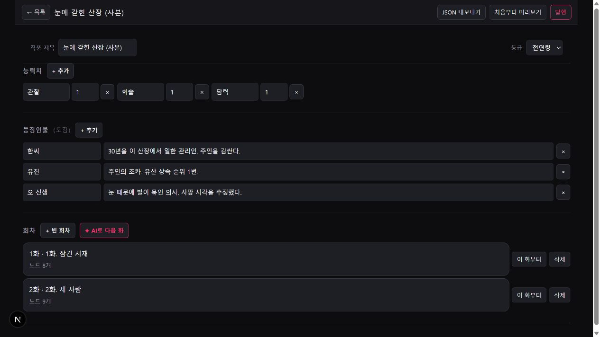
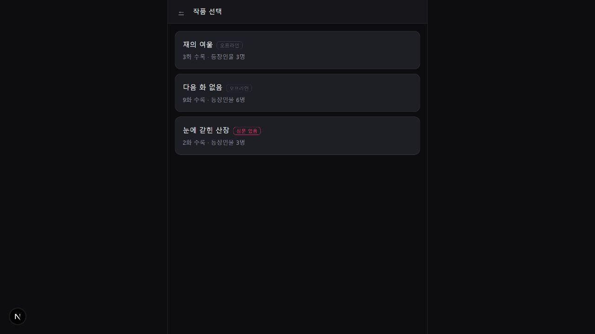
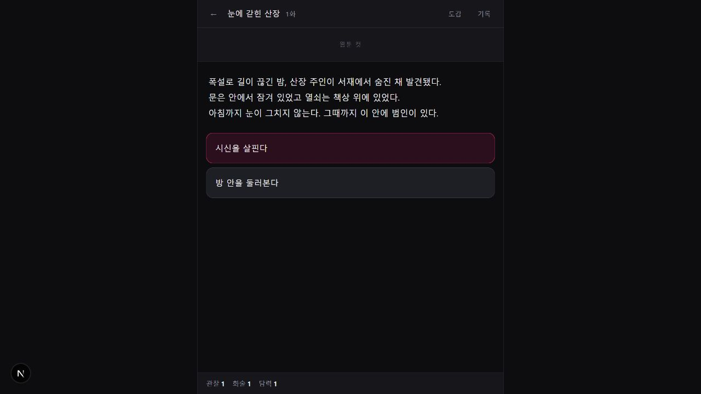
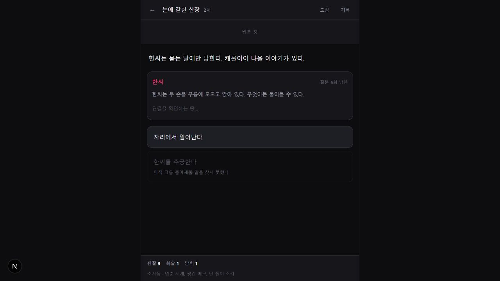

BUILD PROFILES
3개 통과
사용자 정적 · 관리자 정적 · Vercel 호스팅
Claude가 만들다 멈춘 로컬 프로토타입을 점검하고, 관리자용 로컬 Claude와 사용자용 Vercel 웹을 하나의 Next.js 앱과 서로 다른 빌드 프로필로 통합했다. 이 문서는 현재 화면과 실제 검증 결과를 기준으로 작성했다.
사용자 정적 · 관리자 정적 · Vercel 호스팅
가비아 study DB · ownchat 스키마
DB → 브라우저 캐시 → 번들 작품
Vercel 서버 비밀값 등록 필요
Electron · 로컬 환경
Next.js 서버 · 공개 플레이어
가비아 study · ownchat 스키마




설치형 Electron에서 로컬 Claude 활용
사전 생성된 노드와 선택지로 진행
용의자와 직접 대화하며 추리
feedback-radar, toonmadang과 테이블이 섞이지 않는다.
공모전 시연에서 DB가 잠깐 끊겨도 화면이 비지 않도록 구성했다.
bedcoding/ownchat을 Vercel 프로젝트로 가져온다.apps/rpg를 선택한다. vercel.json이 호스팅 빌드를 자동 선택한다.DATABASE_URL, DATABASE_SSL=disable, OPENAI_API_KEY를 등록한다./play, /chat, /tour, /api/health를 확인한다.지금은 “관리 도구·플레이 엔진·투어·OpenAI 채팅·DB 읽기 경로가 한 앱에 통합된 상태”다. 실제 Vercel 배포 검증과 관리자 DB 발행 경로는 아직 남아 있다. 가비아 PostgreSQL은 TLS를 지원하지 않아 이번 공모전 데모 범위로만 사용하는 것이 안전하다.